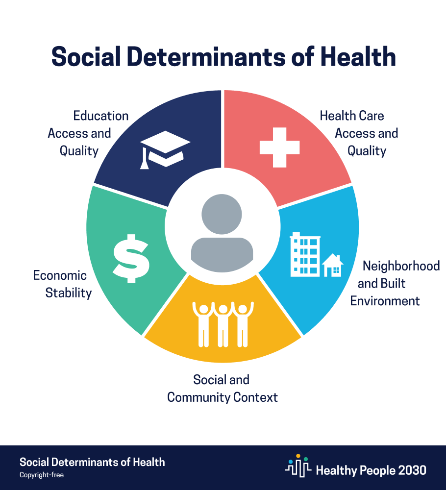

library(corrplot)
library(FactoMineR)
library(factoextra)
library(data.table)
library(tidyverse)
library(caret)
library(here)
library(ggplot2)Development of Social Determinant of Health (SDOH) composite score
Background
Note
Definition: Social determinants of health (SDOH) are the conditions in the environments where people are born, live, learn, work, play, worship, and age that affect a wide range of health, functioning, and quality-of-life outcomes and risks.

Potential benefits from SDOH
- In United States, 3.6 million people did not receive medical care because of transportation barriers (Wallace et al. 2005)
- Hypothetical US income support policies could prevent 12,000 to 32,000 deaths among the lowest-income, working-age adult population (Avanceña et al. 2022)
- In Illinois, a 42 percent drop in participants’ health care costs almost immediately through a housing support program (Better Health Through Housing) (“Social Determinants of Health Series: Housing and the Role of Hospitals,” n.d.)
- SDOH are critical factors for promoting population health and well-being
Current efforts on SDOH
- Growing movement to identify and address non-medical, social need of patients in the health care system
- Various SDOH data are publicly available, especially area/community-level SDOH (US Census Bureau, Area Health Resource Files (AHRF), County Health Ranking (CHR), etc.)
- Interpreting SDOH is difficult due to the complexity of data, multiple data sources, and the large number of SDOH measurements
- Developing a composite score for SDOH could be helpful for interpretation
Research gaps and objectives
- Current exist SDOH composite scores
- either combined all domains of SDOH into one score (e.g., Area Deprivation Index(Singh 2003), Social Vulnerability Index, SDOHi from BUSPH)
- or targeted specific population (e.g., SDOHi from CQL)(Friedman 2020)
- Few composite scores focused on each domain of SDOH
- This study aims to develop SDOH composite score for each domain (could be narrower) and assess the SDOH composite score in predicting outcomes (e.g., utilization, readmission)
Intended audience
People who interested in SDOH domain, especially in SDOH composite score.
Method
Loading packages
Data source:
Geo Social Analytic Platform (GSAP) data(Ballena and JH Bloomberg School of Public Health 2019) in 2018, which is county-level data includes 3,220 counties
Data dictionary:
dictionary <- read.csv("~/Desktop/Johns Hopkins University/Courses/2nd Year/2nd Quarter/PH.140.840 Statistical Programming Paradigms and Workflows/Project1/Project1/dictionary.csv")
knitr::kable(dictionary)| Variables | Description |
|---|---|
| Fuelheat | Gas as house heating fuel |
| Housingvalue | Value of house (dollars) |
| Kitchen | Kitchen facilities for all housing units |
| Mortgage | Housing units with a mortgage (units) |
| Mortgagecost | Mortgage/Aggregate monthly costs |
| Mortgagetax | Median real estate taxes paid for units with a mortgage |
| Mortgageval | Housing units with a mortgage (dollars) |
| Occupy | Occupied house |
| Occupyown | House occupied by owner |
| Phone | Telephone service available |
| Plumbing | Complete plumbing facilities |
| Rentgross | Median rent gross (dollars) |
| Rentprcinc | Median rent gross as a percentage of household income |
| Rooms | Median number of rooms |
| Units | Units in structure |
| Unitsownpop | Units occupied by owner |
| Vehicle | Average number of vehicles available |
| Yrbuilt | Median year structure built |
Statistical analysis:
used principal component analysis to classify variables into meaningful group
Results
Read dataset:
housing <- read.csv("~/Downloads/housing.csv")# convert character to numeric
housing <- housing %>%
mutate_at(vars(-("geoid")), as.numeric)
sapply(housing, class) geoid fuelheat housingvalue kitchen mortgage mortgagecost
"character" "numeric" "numeric" "numeric" "numeric" "numeric"
mortgagetax mortgageval occupy occupyown phone plumbing
"numeric" "numeric" "numeric" "numeric" "numeric" "numeric"
rentgross rentprcinc rooms units unitsownpop vehicle
"numeric" "numeric" "numeric" "numeric" "numeric" "numeric"
yr_median
"numeric" # detect and delete missing value
sum(is.na(housing))[1] 59dim(housing)[1] 3220 19housing_clean <- na.omit(housing)
sum(is.na(housing_clean))[1] 0dim(housing_clean)[1] 3175 19# feature scale
housing_clean <- housing_clean %>% subset(select = -geoid)
preproc <- preProcess(housing_clean, method=c("range"))
housing_norm <- predict(preproc, housing_clean)
summary(housing_norm) fuelheat housingvalue kitchen mortgage
Min. :0.0000 Min. :0.00000 Min. :0.0000 Min. :0.0000
1st Qu.:0.7029 1st Qu.:0.05890 1st Qu.:0.8802 1st Qu.:0.4471
Median :0.8265 Median :0.08641 Median :0.9249 Median :0.5528
Mean :0.7790 Mean :0.11062 Mean :0.9067 Mean :0.5483
3rd Qu.:0.9145 3rd Qu.:0.13128 3rd Qu.:0.9554 3rd Qu.:0.6571
Max. :1.0000 Max. :1.00000 Max. :1.0000 Max. :1.0000
mortgagecost mortgagetax mortgageval occupy
Min. :0.0000 Min. :0.0000 Min. :0.0000 Min. :0.0000
1st Qu.:0.6624 1st Qu.:0.1456 1st Qu.:0.5143 1st Qu.:0.7596
Median :0.7502 Median :0.1581 Median :0.6109 Median :0.8433
Mean :0.7339 Mean :0.1713 Mean :0.6008 Mean :0.8147
3rd Qu.:0.8262 3rd Qu.:0.1818 3rd Qu.:0.7044 3rd Qu.:0.9059
Max. :1.0000 Max. :1.0000 Max. :1.0000 Max. :1.0000
occupyown phone plumbing rentgross
Min. :0.0000 Min. :0.0000 Min. :0.0000 Min. :0.0000
1st Qu.:0.6590 1st Qu.:0.8947 1st Qu.:0.9017 1st Qu.:0.1739
Median :0.7280 Median :0.9205 Median :0.9451 Median :0.2163
Mean :0.7125 Mean :0.9092 Mean :0.9260 Mean :0.2452
3rd Qu.:0.7884 3rd Qu.:0.9391 3rd Qu.:0.9723 3rd Qu.:0.2845
Max. :1.0000 Max. :1.0000 Max. :1.0000 Max. :1.0000
rentprcinc rooms units unitsownpop
Min. :0.0000 Min. :0.0000 Min. :0.0000 Min. :0.0000
1st Qu.:0.3620 1st Qu.:0.4800 1st Qu.:0.8269 1st Qu.:0.6736
Median :0.4305 Median :0.5400 Median :0.9428 Median :0.7496
Mean :0.4323 Mean :0.5438 Mean :0.8666 Mean :0.7330
3rd Qu.:0.5011 3rd Qu.:0.6000 3rd Qu.:0.9745 3rd Qu.:0.8118
Max. :1.0000 Max. :1.0000 Max. :1.0000 Max. :1.0000
vehicle yr_median
Min. :0.0000 Min. :0.0000
1st Qu.:0.5706 1st Qu.:0.9830
Median :0.6217 Median :0.9870
Mean :0.6213 Mean :0.9839
3rd Qu.:0.6727 3rd Qu.:0.9900
Max. :1.0000 Max. :1.0000 corr_matrix <- cor(housing_norm)
# correlation plot
corrplot(corr_matrix, method="pie", hc.order = TRUE, type = "upper")res.pca <- PCA(housing_norm, ncp = 18, graph = FALSE)
eig.val <- data.frame(get_eigenvalue(res.pca))
ggplot(data=eig.val, aes(x= 1:nrow(eig.val), y=eig.val$eigenvalue)) +
labs(x = "Diamensions",
y = "Eigenvalue") +
geom_line() +
geom_point() +
geom_hline(yintercept = 1, col = "red")print(fviz_eig(res.pca, addlabels = TRUE, ncp = 18))var <- get_pca_var(res.pca)
corrplot(var$cos2, is.corr=FALSE)
Important
Principal component analysis shows four dimensions/factors are appropriate to explain data variance. These four variables could explain 65.65% of variance of data. However, based on the variable quality graph, we may classify variables into three meaningful components, which could be financial, owener’s status, and house condition.
- Financial:Housingvalue, Mortgage, Mortgagecost, Mortgageval, Rentgross, Mortgagetax
- Owner’s status: Occupyown, Rentprcinc, Units, Unitsownpop, Vehicle, Occupy
- House Condition: Fuelheat, Kitchen, Plumbing, Room
- Non-classified: Phone, Yr_median
Fuctions from each package
dplyr: select(), mutate_at()
ggplot2: labs(), geom_line(), geom_point(), geom_hline()
data.table: na.omit()
No matching items
References
Avanceña, Anton L V, Nicholas Miller, Ellen Kim DeLuca, Bradley Iott, Amanda Mauri, Daniel Eisenberg, and David W Hutton. 2022. “Estimation of Potential Deaths Averted from Hypothetical US Income Support Policies.” JAMA Health Forum 3 (6): e221537.
Ballena, Carlos, and JH Bloomberg School of Public Health. 2019. “Current Projects.” https://www.jhsph.edu/research/centers-and-institutes/johns-hopkins-center-for-population-health-information-technology/research/current-projects.html.
Friedman, Carli. 2020. “The Social Determinants of Health Index.” Rehabil. Psychol. 65 (1): 11–21.
Singh, Gopal K. 2003. “Area Deprivation and Widening Inequalities in US Mortality, 1969–1998.” Am. J. Public Health 93 (7): 1137–43.
Wallace, Richard, Paul Hughes-Cromwick, Hillary Mull, and Snehamay Khasnabis. 2005. “Access to Health Care and Nonemergency Medical Transportation: Two Missing Links.” Transp. Res. Rec. 1924 (1): 76–84.